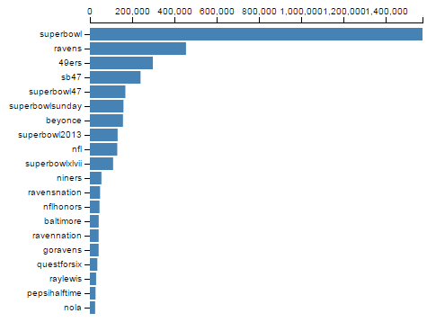
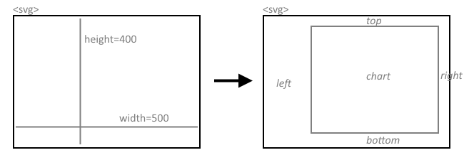

Build a Bar Chart
In this tutorial, we will use the Cars dataset to build a simple bar chart. This will let us review some important D3 concepts, like scales and axes and the "data join".

This bar chart simply shows the weight of each car.
1. The Cars Dataset
The "Cars" dataset used in this tutorial is a subset of the 1983 ASA Data Exposition dataset that is used in the HCDE 511 course.
You can download the data in Excel format, although it is not necessary to complete the tutorial.
Every row in the data represents an individual type of car. The dataset includes the following fields:
- Model: the car's model name
- Origin: the country where the car is from
- Year: the year the car was manufactured
- Cylinders: the number of cylinders in the car's engine
- Horsepower: how powerful the car's engine is
- MPG: how many miles per gallon the car gets (fuel efficiency)
- Weight: how much the car weighs, in lbs.
2. Drawing a Visualization
How do we get from our cars data to a visualization? Once we've loaded the data, we have to use D3 to draw a bunch of stuff on the screen. Here are the basic steps we'll be following:
- Read the data from CSV.
- Create an SVG element to hold the visualization.
- Define x and y scales.
- Draw the x and y axes and labels.
- For every car in the data:
- Draw an SVG
<rect>element - Set the
yposition - Set the width based on weight
- Draw an SVG
You can review the code for loading the CSV data in the JavaScript panel to the right.
We have also already entered some CSS to make the bar chart look nice. In the following sections, we will go through each of the steps above.
3. Create an SVG element
The first step is to add an SVG element to the page to hold our visualization. We also need to decide what size we want the SVG.
The width and height variables below will determine how big to draw the bar chart.
Add the following to your JavaScript:
var width = 500;
var height = 400;
Now, we ask d3 to create the SVG element and set its width and height:
var svg = d3.select('body')
.append('svg')
.attr('width', width)
.attr('height', height);
This code will create an svg SVG element and append it within the body element, so it looks something like this:
<body>
...
<svg width="500" height="500"></svg>
</body>
Chaining Syntax
The snippet above shows chaining, which is a pattern that most d3 programs use to get lots of stuff done in a small number of lines:
d3.selectlocates the<body>HTML element in the page and returns the<body>element as its result.Onto that result, we chain a call to
append('svg'). This creates an<svg>element as a child of the<body>element, and returns the<svg>that was created.Onto the returned
<svg>element, we chain two calls toattr()to set the<svg>element'swidthandheightattributes using our two variables.
For more about chaining, try this tutorial.
4. Define the x and y scales
How do we convert from numbers in the data to visual variables, like color, position, or size?
Example
- We will map the weight variable in the cars dataset to bar width.
- The maximum weight in the dataset is 3,962 lbs.
- We want the largest bar in the chart to be 500 pixels wide.
- Then, to determine the bar width for a car of 2,100 lbs., we calculate 500 * 2,100 / 3,962 = 265 pixels.
- Draw a bar that is 265 pixels wide.
This math isn't especially complex, when your variables can be categorical, times, or when your visual variables might be colors, things can get more complicated.
D3 Scales
D3 provides some special utilities called scales to make these conversions easier:
- Quantitative Scales for continuous values.
- linear scales:
d3.scale.linear() - log scales:
d3.scale.log() - power scales:
d3.scale.power()
- linear scales:
- Ordinal Scales for discrete values.
- basic ordinal scales:
d3.scale.ordinal() - color scale shortcuts:
d3.scale.category10()
- basic ordinal scales:
- Time Scales for mapping time values.
- multi-level time scales:
d3.time.scale()
- multi-level time scales:
In this tutorial, we'll use d3.scale.linear() to map from
car weight onto bar width. We'll also use d3.scale.ordinal()
to map car model to vertical position for the bar.
Find the domains
Before we can figure out how to map car weight onto bar width, we need to know the maximum weight in the data.
We already know it is 3,962 lbs., but D3 can calculate it for us.
Add the following code:
var max_weight = d3.max(data, function(d) {
return d.weight;
});
This snippet shows how you can use D3 for iterating over data:
- The
d3.maxfunction goes through all of the cars indata. - For each car, the provided "accessor" function is executed
with the parameter
dbeing the current car. - The accessor returns the current car's weight.
- The
maxfunction returns the largest weight of all the cars.
This pattern is common in JavaScript even beyond d3. For more examples, see the following documentation:
Each car in the dataset will be allocated one vertical position in the chart for its bar. The vertical position will be determined based on the car's model name, so before we continue we will also need to extract a list of all of the model names in the data:
var model_names = data.map(function(d){
return d.model;
});
The map() function is built in to JavaScript and is not d3-specific.
See the documentation on MDN
for details.
- Open the Console view on JSBin and click Run.
- Type max_weight in the Console and press Enter. You should see the result 3962.
- For model_names, you should see an array of all the car models.
- Calculate the maximum horsepower in the dataset (190).
- In addition to the max, find the minimum weight - Hint.
Construct the scales
Now that we know the max of weight and the
car models in our data, we are ready to create D3 scales
that will help us draw our bars.
Let's start by constructing the x scale.
D3 scales are simply functions that map one set of values onto another set of values. Borrowing terms from algebra, the input values are called the domain, and the output values are called the range.
In our case, the x scale will be a function that maps
values from the domain of [0, max_weight] onto the range [0, width].
Add the following JavaScript to build the scale:
var x = d3.scale.linear()
.range([0, width])
.domain([0, max_weight]);
The d3.scale.linear() function returns a Scale object, but this
object is actually callable just like a function.
Try entering the following commands into the Console window and check the result:
| Command | Expected result |
|---|---|
| x(0) | 0 (pixels) |
| x(max_weight) | 500 |
| x(2100) | 265.0176 |
Next, we will create an ordinal scale that maps car model
names onto vertical positions for the bars.
The ordinal scale divides the space between 0 and height
up into the proper number of bins given number
of car models we are going to visualize:
var y = d3.scale.ordinal()
.domain(model_names)
.rangeRoundBands([0, height], 0.1);
We are using a magic D3 function called rangeRoundBands() that
ensures your bars get spaced out correctly. You can read more on the
D3 documentation.
You can call the y scale like a function to get the vertical position for different car models.
In the Console, type y("ford pinto") and press Enter. You should see 175 (pixels).
5. Draw the axes
Now we're ready to draw the bar chart axes. If you think about it, there is a lot of stuff that goes into axes. There are several lines and some labels, and they all have to get positioned correctly based on the data and the size you are drawing them.
D3 provides special "axis rendering" utilities.
This can save you a ton of work.
You just have to give it a scale (like the ones you've already created),
tell it whether it is drawing on the top, bottom, left, or right
of your chart, and it does the rest for you.
Add the code below to initialize and store an axis renderer
in the xAxis variable:
var xAxis = d3.svg.axis()
.scale(x)
.orient("top");
To actually use the renderer to draw the SVG elements making up the axis, we use this code:
svg.append("g")
.classed("x axis", true)
.call(xAxis);
This chain of calls does the following:
- Reuse the
svgobject we created at the beginning. - Append a new
<g>element to the<svg>. Note that in SVG, the<g>or "group" element is just a generic container for elements, a little like div in HTML. - The call to
classed()sets the class attribute on the<g>element. call(xAxis)renders the axis inside the<g>.
But where is the axis?
Even if you entered the above code correctly, not much will have changed on the output panel.
However, you might notice a small black line at the top of the SVG. In fact, the SVG actually does contain the new markup for the axis elements. Unfortunately, they are off screen!
Elements rendering in the wrong place is a common problem with D3. We'll fix that in the next step by adding some space around the outside of our visualization.
Add margins
To get the axes to show, we need to draw our visualization a little bit inside the outside of the SVG element.

As the above illustration shows, we will add margins to the top, left, right, and bottom of the SVG element and draw the chart inside the new, smaller area.
To do this, we need to back up a little bit and change the way we set up the visualization.
1. Define the margins
Find the code where you start to define the x and y scales
(look for var x = ...). Right before that section, add the following:
var margins = {
top: 20,
right: 20,
bottom: 50,
left: 110
};
var graphWidth = width - margins.right - margins.left;
var graphHeight = height - margins.top - margins.bottom;
var chart = svg.append('g')
.attr('transform', 'translate(' + margins.left + ',' + margins.top + ')');
//this goes before you start to define the scales...
This sets up the margin sizes and adds a new SVG <g> (grouping) element
to the drawing. It also transforms the group element by shifting it
left and down using the margin sizes we configured above.
We will hang all of the visualization elements off this element.
Now we need to update a few other things now as well:
2. Scales should use graphWidth and graphHeight
Look immediately below, where you
define the scales (var x = and var y =).
In this section, you must replace width and height
with graphWidth and graphHeight, respectively.
3. Append to chart, not svg
Further down, find the code where you draw the x-axis.
Instead of using svg.append, you should change it to chart.append.
Add the other axis yourself
Ok, now we are ready to add the y-axis.
The code for this is very similar to what we used for the x-axis, so why don't you try this yourself?
Note: you won't see a long black line for the y-axis like you do for the x-axis. This is because of some special CSS styles that we added to make the chart look better.
If you get stuck, you can always click the JS Bin button in the next section to skip ahead to the answer.
6. Draw some bars
Ok, that was a lot of work just to add axis labels. It is finally time to draw some bars.
Remember the outline for this step that we gave at the beginning:
For every car in the data:
- Draw an SVG
<rect>element - Set the
yposition - Set the width based on weight
If you have programmed in other languages, this might seem like a place for a pretty straightforward for-loop.
But that's just not how things are done in D3. D3 uses something called a join to loop over data and create or alter many elements at once.
If you are writing a loop with d3, you are probably doing it wrong.
Here's the D3 way of rewriting the "algorithm" above:
- Select all the
<rect>elements, even if there aren't any yet. - Bind the cars data to the selection.
- If there are excess data points, create new
<rect>elements as needed. - If there are excess
<rect>elements, delete them. - Update the
yposition and width of the remaining<rect>elements.
D3 is not the only language that works this way. You might feel D3's way of thinking about loops is somewhat similar to SQL, for example.
You can read more about D3 joins here:
- Three Little Circles, an illustrative tutorial
- Thinking with Joins, a more thorough explanation
Fine, draw me some bars
Enough theory. Let's go through these 5 steps with our bar chart.
1 & 2. Select and bind
Add the following code:
var bars = chart.selectAll('rect.bar')
.data(data);
The first line above asks D3 to select some rectangles (with class "bar"). Note that there are no such rectangles anywhere on the page yet. They are purely theoretical rectangles (step 1)!
Given the result of the selection, the second line binds this selection to our cars dataset (step 2). That means D3 goes through both the selection and the dataset and tries to match up selected elements to dataset rows (cars).
3. Create rects for unmatched cars
We know there are 25 cars in our dataset, but there
are 0 (zero) <rect> elements in our selection. Therefore, we
will ask D3 to create these missing elements:
bars.enter()
.append('rect')
.attr('class', 'bar');
The key to this step is the enter() function, which roughly
translates to "do the following for every data point lacking a match".
4. Delete rects without matching cars
It just so happens that we do not have any excess bars to delete. However, this is how we would ask D3 to do it:
bars.exit()
.remove();
Almost done. We now have <rect> elements on the visualization
but we don't see them because we haven't set their position and size
(both default to zero).
5. Configure the bars based on the data
Add the following:
bars.attr('x', 0)
.attr('y', function(d) {
return y(d.model);
})
.attr('height', y.rangeBand())
.attr('width', function(d) {
return x(d.weight);
});
Let's break that down into sections:
- The
barsvariable contains all the bar elements with matching car data. - The first line,
.attr('x', 0)ensures that the left edge of each rectangle is at zero pixels (the left edge of the chart). - Set the vertical position of each bar with
.attr('y', function(d) {...}). D3 goes through every bar and calls the provided function. Inside the function, the car bound to the current bar is given as the parameterd. Now, we use the y-scale object we created before to translate the car's model name into a pixel position. - Set the height of each bar using
.attr('height', y.rangeBand()). This relies on the rangeBand magic provided by D3 ordinal scales to pick some size will look good. - Finally, set the width of each bar using the x-scale to translate
weightinto widths.
- Add more margin on the left side of the chart to get the model names to show.
- Modify the CSS for the bars. Set the 'fill' style to "red" instead of "steelblue".
- After you parse the data from CSV, try sorting the data array by weight using JavaScript's Array.sort method. Note that the data is currently sorted by year.
Below is a live copy of the final version:
Further exploration
The examples below show off how you can tweak your D3 code to create crazy awesome visualizations. There are tons more on the D3 Gallery.
Convert the bars into circles
Why not draw circles instead of bars, and let the radius of the circle scale with car weight?
var r = d3.scale.linear()
.range([0, y.rangeBand()])
.domain([0, max_weight]);
/* ... */
bars.enter()
.append('circle')
.attr('class', 'bar');
/* ... */
bars.attr('cx', function(d) {
return x(d.weight);
})
.attr('cy', function(d) {
return y(d.model);
})
.attr('r', function(d) {
return r(d.weight);
});
Show cylinders with color
There are only 5 different types of cylinders in this dataset. Why not treat them as categorical data and display this with color?
var cylinders = data.map(function(d) {
return d.cylinders;
});
var color = d3.scale.category10()
.domain(cylinders);
bars.attr('fill', function(d) {
return color(d.cylinders);
});
Chart the average weight per year
D3 includes some handy functions for aggregating and transforming data, include the nest function.
Using this, we can convert our per-car bar chart into a per-year bar chart and show the average weight in each year.
var avgYearWeight = d3.nest()
.key(function(d) {return d.year;})
.sortKeys(d3.ascending)
.rollup(function(g) {
return d3.mean(g,function(d) {
return d.weight;
});
})
.entries(data);
var years = avgYearWeight.map(function(d) {
return d.key;
});
/* ... */
var y = d3.scale.ordinal()
.domain(years)
.rangeRoundBands([ 0, graphHeight], 0.1);
/* ... */
bars.attr('x', 0)
.attr('y', function(d) {
return y(d.key);
})
.attr('height', y.rangeBand())
.attr('width', function(d) {
return x(d.values);
});
Animate the bar widths
D3 makes it stupidly easy to add transitions and animations. We only need two new lines to animate our bar entrances:
bars.enter()
.append('rect')
.attr('class', 'bar')
.attr('width', 0); // this is new
/* ... */
bars.attr('x', 0)
.attr('y', function(d) {
return y(d.model);
})
.attr('height', y.rangeBand())
.transition() // this is new
.attr('width', function(d) {
return x(d.weight);
});
Dynamically update with streaming data
D3's way of building visualizations through data binding makes it surprisingly simple to update visualizations based on changing data, such as from streaming sources.
Below is an example where cars are gradually added to the bar chart.